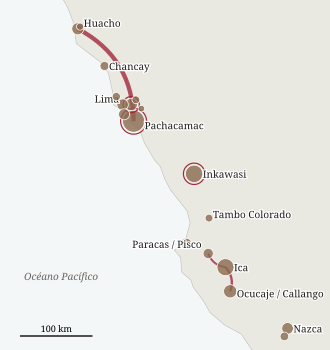
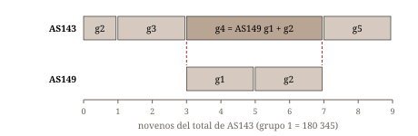
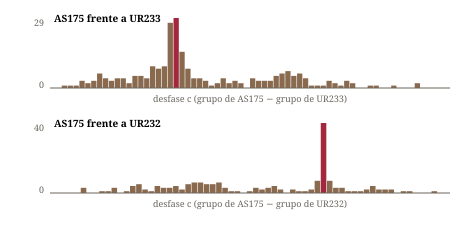
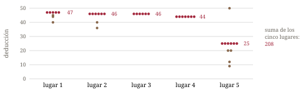

Desde Locke (1912) la notación decimal de los khipus incaicos es legible: los nudos largos de 2–9 vueltas o un nudo en ocho dan las unidades, los grupos de nudos simples dan los órdenes superiores, y la posición a lo largo de la colgante da el valor posicional. Qué contaban los números y cómo se relacionaban los registros entre sí es en gran parte desconocido. El Databook de los Ascher (Ascher y Ascher 1978) documenta muchas sumas dentro de khipus individuales. Se han mostrado relaciones entre khipus en pocos archivos: khipus concordantes y jerárquicos en Puruchuco (Urton y Brezine 2005), pares de cuentas duplicadas (Urton 2005, 2014), el archivo de almacén de Inkawasi con sus deducciones fijas (Urton y Chu 2015, 2019), una conexión numérica entre AS069 y AS070 (Thompson 2024) y una copia parcial de un khipu de Lima en Gotemburgo (Chirinos Rivera 2010).
Estas relaciones son la evidencia más directa que tenemos de la contabilidad con khipus como práctica: quién guardaba los totales, quién los detalles y qué se copiaba. Aquí las buscamos en todo el corpus abierto con líneas de base estadísticas explícitas. Damos prioridad a las relaciones cuya evidencia numérica no depende de la interpretación.
Datos. Open Khipu Repository (OKR, versión SQLite, 609 khipus; Zenodo 10.5281/zenodo.18025748), los datos complementarios del Khipu Field Guide (KFG, 678 khipus; Khosla y Medrano 2023, Zenodo 10.5281/zenodo.8125718) y 19 khipus añadidos al OKR después de 2017. El valor de una cuerda es la suma de los valores de sus nudos; salvo indicación contraria usamos el valor propio de la colgante sin subsidiarias, pues en 422 khipus las sumas de grupo se cumplen con los valores propios (z = 4,4 frente a una línea de base de desplazamiento) y fallan si se suman o restan las subsidiarias. Los límites de grupo son los registrados, que siguen el espaciado físico sobre la cuerda principal. Los atributos físicos (terminación, longitud, color, dirección de los nudos) proceden de los registros del OKR y del KFG; los registros de nudos publicados se verificaron en el Databook de los Ascher cuando era pertinente.
Detectores. (a) Sumas vectoriales: cada grupo de cada khipu frente a las sumas, posición por posición, de 2–10 grupos consecutivos, o de 2–8 grupos con paso 2–4, de cada uno de los demás khipus. (b) Alineación por diagonal de grupos: para dos khipus, el número de valores iguales ≥ 10 entre el grupo j de uno y el grupo j + c del otro, admitiendo una posición de más en el grupo más largo, sumado a lo largo de cada desfase c. (c) Coincidencia de lotes: grupos enteros iguales dentro de máx(1, 2 %) con al menos la mitad de las posiciones exactas. (d) Totales en subsidiarias: listas de valores subsidiarios de una colgante frente a cadenas de sumas de grupo de otros khipus.
Líneas de base. Barajar los valores es demasiado permisivo para las sumas, porque destruye la estructura de grupos de la que dependen. Usamos por ello la línea de base de desplazamiento: la misma búsqueda con los objetivos desplazados en ±d (por lo general d = 1–30), que conserva todas las propiedades estructurales de los datos. Para las alineaciones comparamos el desfase alineado con todos los demás desfases y con permutaciones del orden de los grupos. Los pares con el mismo número de museo se tratan como registros duplicados y se excluyen.
Validación. Sin indicarles dónde buscar, los detectores recuperan la relación AS069/AS070 de Thompson, la copia Lima–Gotemburgo (Chirinos Rivera 2010), los pares concordantes de Inkawasi y sus deducciones fijas de 10, 15 y 47 (Urton y Chu 2015; las deducciones fijas no aparecen en ninguna otra parte del corpus), registros duplicados conocidos y colgantes sueltas iguales a la suma del grupo precedente (28 casos frente a 0,6 esperados). La tabla 1 enumera las relaciones presentadas aquí; la figura 1 muestra dónde se hallaron los khipus vinculados.
| § | Relación | Khipus | Evidencia principal |
|---|---|---|---|
| 3.1 | Una distribución en tres khipus (Berlín, Ica 1907) | AS143, AS149, AS179 | única suma vectorial exacta entre khipus; línea de base 0–2, solo valores pequeños |
| 3.2 | Copia de detalle sin los totales (Pachacamac → Huacho) | AS175 → UR233 + UR232 | alineación diagonal z = 6,4 y 19,5; permutación p ≤ 0,003 |
| 3.3 | Extracto más totales de un tercer khipu | AS118 ← UR218, AS125 | dos grupos cuerda por cuerda; de 696, solo AS125 coincide con > 1 subsidiaria |
| 3.4 | Dos mitades de una cuenta de 14 unidades (Pachacamac → Huacho, Basilea) | UR212 + AS131 → MM008–MM016 | otros ≤ 4 cuerdas; misma unidad en 3 de 3 fragmentos, p ≈ 0,005 |
| 3.5 | Marco de catorce unidades en el lote de Gretzer (indicio) | UR212, AS131, AS170, UR199 | binomial P ≈ 0,0005 (0,04 sin los dos que motivaron la pregunta) |
| 3.6 | Casillas vacías llenadas en una copia; copia de solo totales; deducción según el lugar (Inkawasi) | UR255 ~ UR267A, UR273B ~ UR274B, UR269 | cerca de 1 en 3000; p ≈ 10−5; p ≈ 0,0005 |
| 3.7 | Registro de solo totales de una parte de resumen | AS003 ← AS215 | seis sumas y su total 76 |
| 3.8 | Cuerda suelta en una copia = subsidiaria en la otra | UR270 → UR278, UR053C → UR053B | 35 campos frente a ≤ 19 en 2000 permutaciones (UR053) |
Tabla 1. Relaciones entre khipus presentadas en este trabajo. No se incluyen las relaciones publicadas que los detectores recuperan (validación).

AS143 (KH0159, VA47096, Ica), AS149 (KH0165, VA44866C, Ocucaje) y AS179 (KH0196, VA47123, Ica) llegaron al museo de Berlín en la misma adquisición de 1907. El grupo 1 de AS143 es su total (180 345); los grupos 2–5 son las partes, como señalaron los Ascher. El grupo 4 de AS143 es igual a la suma de los grupos 1 y 2 de AS149 en las cinco posiciones:
| Posición | 1 | 2 | 3 | 4 | 5 |
|---|---|---|---|---|---|
| AS149 g1 | 8653 | 4049 | 20 640 | 660 | 4741 |
| AS149 g2 | 8783 | 4171 | 21 243 | 690 | 4787 |
| AS143 g4 | 17 436 | 8220 | 41 883 | 1350 | 9528 |

Entre todas las comparaciones entre khipus del corpus (detector a), es la única suma vectorial exacta; con los objetivos desplazados en 1–7 la misma búsqueda encuentra 0–2, todas con valores pequeños. Se mantiene cuando las colgantes sueltas se unen a los grupos contiguos.
Los Ascher (1981, p. 146) tratan AS143 y AS149 juntos, pero no hallaron una relación confirmada; Chirinos Rivera (2010, pp. 286–293) ya calculó las proporciones de los grupos de AS143 respecto al total (11,0; 22,7; 43,6; 22,7 %, es decir cerca de 1, 2, 4 y 2 novenos) y las expresó como partes de 600; trata AS143 solo, y AS149 no aparece en su libro. Lo nuevo aquí es el vínculo con AS149 y AS179 y la lectura en novenos, en la que el grupo de 4/9 de AS143 es la suma de las dos partes de 2/9 registradas en AS149. Según nuestra lectura, las proporciones uniformes dentro de cada khipu se deben a una sola cantidad de composición fija repartida entre cinco destinatarios, uno con media parte, y registrada en tres niveles en tres khipus.
AS175 (UR1175, KH0192, VA42518, Pachacamac, 1907) tiene 45 grupos de cinco colgantes en tres partes; según los Ascher (Databook, pp. 1073–1074), la parte 2 (grupos 22–24) se relaciona con las sumas de los siete conjuntos de la parte 3. UR233 y UR232 (KH0470, KH0469, VA63038b, Huacho) son dos khipus cuyas cuerdas principales están empalmadas (nota del KFG sobre UR232). UR233 repite la parte 1 de AS175 (grupos 1–21; tres grupos de AS175 aparecen divididos en dos) y UR232 repite la parte 3 (grupos 25–45), grupo por grupo. A lo largo del desfase alineado hay 29 y 40 valores iguales ≥ 10, frente a 3,2 ± 4,0 y 2,1 ± 1,9 en todos los demás desfases (z = 6,4 y 19,5); ninguna permutación del orden de los grupos alcanza el puntaje real (p ≤ 0,003). De los valores comparables, 85 de 100 (UR233) y 73 de 105 (UR232) son iguales, y la mayoría de los demás difiere en un nudo.

La copia se ajusta a los totales mejor que el original. Sumar la parte 3 tal como está registrada en AS175 reproduce exactamente 5 de los 15 valores de la parte 2 (6 si se admite un nudo de diferencia; los Ascher, con una tolerancia de un dígito, cuentan 8); sumar los mismos grupos tal como están en UR232 reproduce 8 exactamente (10 con tolerancia de un nudo). Tomando cada uno de los siete sumandos de una u otra versión, se pueden alcanzar exactamente 10 de 15 totales (con los objetivos desplazados en ±1…±20: 1,5 en promedio, como máximo 5). En cinco totales hacen falta los valores de Huacho donde las versiones difieren; por ejemplo, el total 335 necesita 18 (UR232) donde AS175 tiene 108 (grupo 27, posición 3). Un total requiere el valor de AS175. No podemos saber por los registros si los valores discrepantes de AS175 se cambiaron después o se leyeron mal.
AS118 (UR1118, KH0132, VA42601) tiene tres grupos. Sus grupos 2 y 3 (siete colgantes blancas cada uno; el grupo 2 «en realidad sobre una cuerda principal subsidiaria», según la nota de Urton en el registro del KFG) repiten los grupos 2 y 3 de UR218 (KH0456, VA42559) cuerda por cuerda, incluido el número de nudos de cada cuerda: [620, 470, 528, 935/932, 474, 319, 453] y [492, 663, 252, 654, 423, 433, 275]. Cinco cuerdas del grupo 3 están rotas en AS118 y conservan solo sus órdenes superiores (los Ascher registran «6(5+)?» y «4??» donde UR218 tiene 663 y 423); en UR218 están intactas, y las longitudes difieren, de modo que son dos objetos. UR218 no es la copia que Urton (2014, p. 15) empareja con UR1144: sus seis pares de Pachacamac se parecen en número de cuerdas y color, y sus valores coinciden solo al nivel del azar en nuestros datos.
La primera colgante de AS118 no lleva nudos y tiene cinco subsidiarias, 2696, 13 182, 14 658, 11 522 y 8565. Los Ascher (Databook, pp. 791–793) anotan que esta cuerda no tiene una sujeción regular de colgante: su extremo torcido pasa entre las hebras de la cuerda principal, de modo que se sujetó antes de ser torcida y anudada. Las subsidiarias 2–5 siguen, en orden, las sumas de grupo de AS125 (KH0140, VA42670), 13 676, 14 658, 11 444 y 8584:
Frente a las cadenas de sumas de grupo de los otros 696 khipus (mejor desfase, tolerancia 1 %), solo AS125 coincide con más de uno de los cinco valores; con los valores desplazados en ±100…±300 ningún khipu coincide con tres.
El objeto IVc.366.03 del Museum der Kulturen de Basilea es un paño sobre el que se cosieron en 1924, bajo Nordenskiöld, diez khipus fragmentarios y muchas cuerdas sueltas. Según el informe del museo de 1910 (Medrano 2022), las cuerdas proceden de un cementerio cerca de Huacho, excavado por Arnold Masarey. Seis de sus diez fragmentos (OKR MM008, MM009, MM012, MM014, MM015, MM016) repiten tramos de dos khipus del lote berlinés de Pachacamac: UR212 (VA42508(A), registrado por Urton; 37 de 195 colgantes) y AS131 = UR1131 (VA42510, registrado por los Ascher; 25 de 146). Frente a cada uno de otros 121 khipus con ≥ 100 colgantes, los fragmentos coinciden en 4 cuerdas como máximo. Los tramos más largos son de 13 cuerdas (MM015 = cuerdas 182–194 de UR212), 10 (MM016 = UR212 139–148) y 7 (MM008 = UR212 6–12, en un grupo que empieza con 0, 437, 103 como el primer grupo de UR212 empieza con 0, 437, 102). Dentro de cada fragmento, los tramos de UR212 y de AS131 van en sentidos opuestos, y los propios fragmentos miran hacia uno y otro lado. Esto concuerda con dos registradores que leyeron desde extremos opuestos y con piezas cosidas sobre un paño, de modo que el sentido no tiene significado. Los valores y las subsidiarias difieren en algunos puntos, de modo que las cuerdas de Basilea son un segundo registro, no las mismas cuerdas. Con AS175 → UR233 + UR232 (sección 3.2), es el segundo caso de una cuenta de Pachacamac repetida en khipus de Huacho, en otro museo. En los registros de Berlín todos los originales de Pachacamac fueron reunidos por Wilhelm Gretzer, y los khipus berlineses de Huacho por Eduard Gaffron. Los fragmentos de Basilea se atribuyen a Gaffron en el OKR, pero a Arnold Masarey en el archivo de Basilea. UR212 y AS131 tienen cada uno 14 grupos principales (de 14 y 10 cuerdas), y ambos los dividen en dos partes de siete en el mismo punto (AS131 con un espacio mayor, como señalan los Ascher; UR212 con una sola cuerda sin nudos). Contando los de UR212 desde su final y los de AS131 desde su inicio, cada uno de los tres fragmentos que lleva ambos khipus empareja la misma unidad (1, 4, 14; por azar p ≈ (1/14)² ≈ 0,005). Los totales por unidad de los dos khipus berlineses no están correlacionados (ρ = 0,19), de modo que registran categorías distintas de las mismas 14 unidades, que el khipu de Huacho puso lado a lado, 24 cuerdas por unidad. Es lo inverso de AS175, cuya única cuenta se reparte en dos khipus de Huacho. Como indicio, donde los khipus berlineses dejan sin nudos una cuerda marcada por el color (la séptima cuerda oscura de AS131, la tercera o cuarta de UR212), la copia de Basilea lleva un valor (3 de 3), mientras que las demás cuerdas sin nudos siguen sin nudos: el mismo patrón de casilla vacía y copia llena que en Inkawasi. En las cinco unidades que los fragmentos llevan completas, 41 valores coinciden y 5 difieren (todos en la unidad 14); de los cinco ceros berlineses, los tres que están llenos en la copia de Basilea son exactamente los tres marcados por el color (1 en 10 por azar). Los demás fragmentos del paño (MM010, MM011, MM013, MM017) no se pueden situar con seguridad.
Catorce grupos principales son raros en el corpus (1,6 % de los khipus fuera del lote berlinés de «Pachacamac» comprado a Wilhelm Gretzer), pero aparecen en 4 de los 23 khipus digitalizados de ese lote: UR212, AS131, AS170 y UR199 (binomial P ≈ 0,0005; P ≈ 0,04 si se excluyen UR212 y AS131, que motivaron la pregunta). Las fichas del catálogo de Berlín (museum-digital) describen otros tres khipus del lote que no están digitalizados: VA 42513 (14 grupos de 13 colgantes), VA 42537 (14 × 9) y VA 42532 (7 × A, 7 × B, 7 × A, 7 × B). AS131, UR212 y AS170 dividen sus unidades en 7 + 7 en el mismo lugar, cada uno marcado de otro modo: un espacio mayor, una sola cuerda sin nudos, un marcador. Las mitades iguales no son un hábito general: en 109 khipus del OKR con un número par de grupos principales, el espacio mayor cae en el centro 12,9 veces (13,0 esperadas).
De 154 khipus con grupos regulares (≥ 5 grupos de igual longitud ≥ 3), 11 tienen una posición en la que la colgante está intacta pero sin nudos en ≥ 80 % de los grupos (3,0 esperados si se barajan los valores dentro de los grupos; como máximo 6 en 200 permutaciones). Otros cinco khipus tienen grupos regulares y ningún nudo. En el par de Inkawasi UR255 ~ UR267A cada grupo registra un valor bruto, la deducción fija 15 y el valor neto (bruto = 15 + neto), en los órdenes [bruto, neto, 15] y [bruto, 15, neto]. De 19 grupos que se pueden emparejar, UR255 deja vacía la colgante del neto en los primeros 12 (11 intactas, 34–45 cm) y la llena con el mismo valor que UR267A en 5 de los últimos 6 (cerca de 1 en 3000 para una división tan limpia con colocación al azar). El khipu atado a él, UR256, muestra el mismo orden: en los grupos de la forma [bruto, casilla, 10, …] la casilla está vacía en los primeros 6 y llena en los 12 siguientes (cerca de 1 en 18 000). Un segundo par, UR273B ~ UR274B (ambos de la unidad 20N), comparte seis totales de depósito (0,45 esperados; p ≈ 10−5): UR273B registra casi solo los totales, con las demás colgantes de cada grupo vacías y a menudo intactas, mientras que UR274B registra los mismos depósitos con su deducción (10 o 17) y su desglose. En ambos pares la copia está en un atado distinto del de su contraparte (UR255 + UR256 frente a UR267A + UR267B; UR273A + UR273B frente a UR274A + UR274B). Urton y Chu (2015, apéndice I) señalan casillas vacías en UR273A y UR273B y relacionan UR273B con UR266 y UR275; en los valores del OKR, UR273B comparte sus totales con UR274B (6, frente a 0,5 esperados) y con ninguno de UR266 ni UR275 (0 cada uno).
Rótulos de producto. Los registros del OKR dan los apodos de los excavadores: «Khipu del Ají» (UR267A/B) y «Khipu del Maní» (UR266, UR268–UR270, todos de la unidad 20N). La deducción fija sigue al producto —15 y 10 en los khipus del ají y sus copias, 47 solo en khipus de la unidad del maní (UR266, UR269, UR275)—, tal como Urton y Chu (2019) relacionan las deducciones con los productos. Además, un atado de costura con una borla roja al inicio de la cuerda principal aparece en dos khipus del archivo, UR266 y UR268, ambos khipus del maní (2 de 4 frente a 0 de 25; p ≈ 0,015). El color no marca el producto: los mismos depósitos de ají están registrados en marrón claro en un atado y en blanco en el otro.
Una deducción fijada por el lugar del registro. UR269 está dispuesto en bloques de unos cinco registros [bruto, neto, deducción] separados por cuerdas vacías sueltas. Su deducción no es una constante, sino que sigue el lugar del registro en su bloque: 47, 46, 46, 44, 25. 33 de 43 deducciones legibles son iguales al valor de su lugar, frente a 17 si se barajan los registros dentro de los bloques (p ≈ 0,0005). No es un porcentaje (los lugares 2–4 tienen las cantidades mayores y el lugar 5 la menor), de modo que cada bloque se lee como una ronda de cinco entregas en orden fijo, cada una con su propia deducción fija. Ningún otro khipu de Inkawasi muestra esto (p > 0,8). Urton y Chu (2015, 2019) cuentan UR269 entre los khipus sin valor repetido y registran solo los valores fijos 10, 15, 47 y 208. Su deducción de cerca del 2 % del depósito medio no se cumple dentro de UR269: 1,9 % en los lugares 2–4, 3,0 % en el lugar 1 y 4,4 % en el lugar 5. Las cinco deducciones por lugar suman 208, la deducción fija de UR268 del mismo recinto, y un bloque completo de UR269 (cerca de 7500–10 400) tiene el tamaño de un depósito de UR268; sin embargo, ningún total de bloque es igual a un depósito de UR268, así que esto sigue siendo una coincidencia por comprobar.

AS215 (Hood Museum, Nasca) tiene, bajo una cuerda superior, un grupo de seis colgantes (la parte II de los Ascher, Databook pp. 127–132) cuyos valores, 4, 14, 7, 37, 10 y 4, son cada uno la suma sobre los cuatro grupos de su parte III; la cuerda superior, 76, es su total. AS003 (Heye 17/8827, procedencia desconocida) tiene siete cuerdas y repite exactamente este resumen con su total, en orden inverso de las cuerdas, con el total después del grupo en ambos khipus. Es un segundo registro de solo totales, después de UR273B en Inkawasi (§3.6). La entrada de los Ascher para AS215 no menciona AS003. Una búsqueda en todo el corpus de cuerdas de un khipu que repitan los totales de grupo o las sumas de columna de otro (summaries.py) no encuentra exceso sobre la línea de base de desplazamiento fuera de AS003 y AS118 (§3.3).
En dos casos independientes, una cuerda que es colgante suelta en una copia es subsidiaria en la otra: UR270 → UR278 en Inkawasi, y UR053C → UR053B en el conjunto «Waterfall», donde 35 campos coinciden frente a 19 como máximo en 2000 permutaciones. Chirinos Rivera (2010) señaló que UR053B y UR053C son casi duplicados; la regla del plegado es observación nuestra. Las copias, en otras palabras, conservan los valores pero no necesariamente la jerarquía de las cuerdas. En 21 pares de copias, los extremos de los tramos coincidentes caen en límites de grupo en el 38 % de los casos frente al 46 % esperado: las copias añaden o quitan cuerdas dentro de los grupos (la colgante vacía de más en Huacho, las casillas llenadas), de modo que la estructura de grupos no es una señal fiable de copia.
UR297 (PC.WBC.2016.072; 438 colgantes, 623 cuerdas) y UR298 (PC.WBC.2016.071; 203 colgantes, 285 cuerdas), donados a Dumbarton Oaks por Bill Conklin, existen en el OKR solo como escaneos de las hojas de registro manuscritas de Urton. Transcribimos las 65 páginas. 74 de los 78 totales de grupo que Urton anotó en las hojas son iguales a los nuestros. UR297 tiene 41 grupos, en su mayoría de diez cuerdas más una cuerda de resumen levantada como una cuerda superior. Ninguno de los dos khipus está vinculado con otro del corpus. Las transcripciones forman parte de los datos complementarios (§5).
Las relaciones muestran varias maneras en que una cuenta se repartía entre varios khipus. En Berlín/Ica un total, sus partes y sus subdivisiones se registraron en khipus distintos, y un khipu (AS143) guarda la suma de dos partes que otro (AS149) tiene por separado. En Pachacamac y Huacho las partes de detalle de una cuenta se copiaron en un par aparte de khipus, sin la parte de resumen, con una colgante vacía añadida a cada grupo, y se unieron en un solo atado. AS118 combina un extracto de un khipu (UR218) con los totales de grupo de otro (AS125). Junto con la copia Lima–Gotemburgo, que contiene exactamente una rama de su original (un subtotal y sus tres sumandos), el patrón es coherente: las copias son extractos de los detalles, mientras que los totales quedan en el registro más completo. Los fragmentos de Basilea muestran la operación inversa, dos categorías de las mismas catorce unidades puestas lado a lado; y AS003 y UR273B muestran que también podía llevarse aparte un registro de solo los totales.
Procedencia. Las dos relaciones Pachacamac → Huacho tienen sus originales en el lote que Berlín compró a Wilhelm Gretzer en 1906–1907, y sus copias entre khipus de Huacho, reunidos por Eduard Gaffron (Berlín) o atribuidos a Gaffron y a Arnold Masarey (Basilea). Gretzer compraba sobre todo a huaqueros y la mayoría de sus objetos llevan el rótulo de Pachacamac. O bien las cuentas se movían unos 150 km entre ambos lugares, o bien algunos de los khipus «de Pachacamac» de Gretzer procedían del valle de Huaura. Los números no pueden decidirlo; los archivos de los museos quizá sí.
Esto concuerda con el testimonio colonial. En la Visita de Chucuito (1567), según el resumen de Chirinos Rivera (2010, pp. 88–89), los khipus de reparto del tributo en ropa, trabajo y plata existían en varias copias, y cada subdivisión sabía, en entrevistas separadas, lo que le tocaba. Concuerda también con la contabilidad de almacén de Inkawasi (Urton y Chu 2015), donde se llevaban dos copias de los mismos depósitos, y donde una copia deja vacío el valor neto en sus primeras entradas.
La principal limitación es que toda la evidencia procede de registros, algunos de hace décadas, de objetos frágiles. Varias lecturas se resolverían sobre los objetos en Berlín: la cuerda 1 del grupo 4 y la cuerda 1 del grupo 3 de AS125; las cuerdas de la parte 3 de AS175 donde AS175 y UR232 difieren; las colgantes de más y las subsidiarias negras de UR232/UR233. Un fechado radiocarbónico de UR232/UR233 (VA63038; Cherkinsky y Urton 2014) mostraría si la copia de Huacho es incaica o colonial.
El Khipu Links Atlas (https://khipu-links.vercel.app; interfaz en inglés y castellano) presenta el corpus y los resultados de este trabajo para investigaciones futuras. Tiene un catálogo de los 699 khipus con datos de cuerdas, consultable por cualquiera de sus números (de investigador, OKR, KFG, de museo), un mapa de lugares de hallazgo con una vista de relieve en 3D, una red de los vínculos, una página por hallazgo con su evidencia y los scripts que lo reproducen, herramientas para buscar una secuencia de valores en el corpus y para comparar dos khipus, estadísticas del corpus, los resultados negativos y una lista de comprobaciones que solo los objetos pueden resolver. Cada khipu tiene un modelo 3D construido a partir de los nudos registrados (OKR), de nuestras transcripciones (UR297, UR298) o reconstruido a partir de los valores donde no se registraron las posiciones de los nudos; el modelo indica cuál. El atlas se construye a partir de tablas editables (lugares, vínculos, hallazgos, correcciones propuestas) en una sola base de datos SQLite, de modo que se pueden añadir nuevas lecturas y vínculos sin tocar el código de la página. Relieve: Terrain Tiles (AWS Open Data; SRTM, GMTED2010, ETOPO1).
Todo el código (Python, biblioteca estándar) y las tablas derivadas están en https://github.com/VladimirMoor/khipu-links (licencia MIT); los scripts principales son vecsum.py, lotmatch.py (§3.1), diagscan.py, huacho.py (§3.2), as118.py (§3.3), basel_huacho.py, ur212_as131_units.py, basel_slots.py (§3.4), units14.py, halves.py (§3.5), blanks.py, fillslot.py, slotded.py (§3.6), summaries.py (§3.7), records.py (§3.8) y do_ingest.py, do_check.py (§3.9); las figuras las dibuja preprint_figs.py. Los datos de origen son las versiones del OKR y del KFG citadas arriba (ambas con licencia MIT). Los datos del atlas, derivados de ellas, se publican con el atlas; no se redistribuyen publicaciones de terceros.
Agradezco a los creadores del Open Khipu Repository, del Khipu Field Guide y del Khipu-Biblio Cross-Reference (K. M. Thompson), cuyos datos abiertos hicieron posible este trabajo. Las búsquedas, el código, los análisis, el atlas y buena parte del texto se desarrollaron junto con un modelo de IA, Claude Opus 5.5 (Anthropic); todos los resultados se verificaron con los registros de origen.
Ascher, M., and R. Ascher. 1978. Code of the Quipu: Databook. Ann Arbor: University of Michigan Press. (Online edition, Cornell University.)
Ascher, M., and R. Ascher. 1981. Code of the Quipu: A Study in Media, Mathematics, and Culture. Ann Arbor: University of Michigan Press.
Cherkinsky, A., and G. Urton. 2014. Radiocarbon chronology of Andean khipus. Open Journal of Archaeometry 2: 5260.
Chirinos Rivera, A. 2010. Quipus del Tahuantinsuyo: curacas, incas y su saber matemático en el siglo XVI. Lima.
FitzPatrick, M. 2025. Primary questions: a survey of Inka-style khipu primary cords. Preprint, doi:10.31235/osf.io/hqkcj_v1.
Hyland, S. 2014. Ply, markedness, and redundancy: new evidence for how Andean khipus encoded information. American Anthropologist 116(3): 643–648.
Hyland, S., G. A. Ware, and M. Clark. 2014. Knot direction in a khipu/alphabetic text from the Central Andes. Latin American Antiquity 25(2): 189–197.
Medrano, M. 2022. The promise of Andean khipu transcriptions: a multi-scale investigation. MPhil thesis, University of St Andrews.
Khosla, A., and M. Medrano. 2023. Khipu Field Guide companion data (data-science khipu article v2.0.0). Zenodo, doi:10.5281/zenodo.8125718.
Locke, L. L. 1912. The ancient quipu, a Peruvian knot record. American Anthropologist 14(2): 325–332.
Open Khipu Repository. Zenodo, doi:10.5281/zenodo.18025748; https://github.com/khipulab/open-khipu-repository.
Thompson, K. M. 2024. A numerical connection between two khipus. Ñawpa Pacha 45(1), doi:10.1080/00776297.2024.2411789.
Thompson, K. M. 2026. Khipu-Biblio Cross-Reference (KBCR), v9. Figshare, doi:10.26188/25661322.
Urton, G. 2005. Khipu archives: duplicate accounts and identity labels in the Inka knotted string records. Latin American Antiquity 16(2): 147–167.
Urton, G. 2014. Quipus de Pachacamac. Lima: Ministerio de Cultura.
Urton, G. 2017. Inka History in Knots: Reading Khipus as Primary Sources. Austin: University of Texas Press.
Urton, G., and C. J. Brezine. 2005. Khipu accounting in ancient Peru. Science 309: 1065–1067.
Urton, G., and A. Chu. 2015. Accounting in the King's Storehouse: the Inkawasi khipu archive. Latin American Antiquity 26(4): 512–529.
Urton, G., and A. Chu. 2019. The invention of taxation in the Inka Empire. Latin American Antiquity 30(1): 1–16.